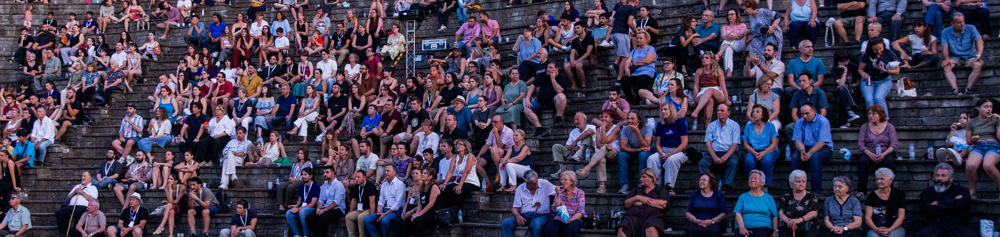
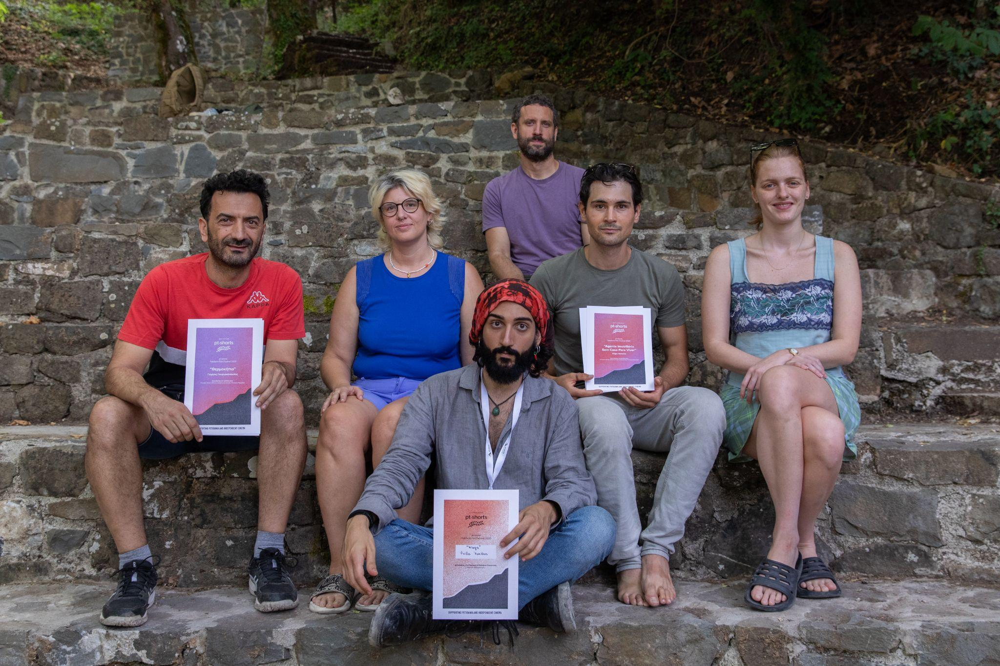
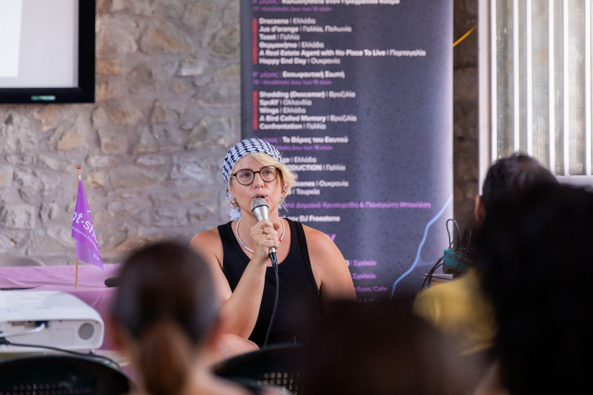
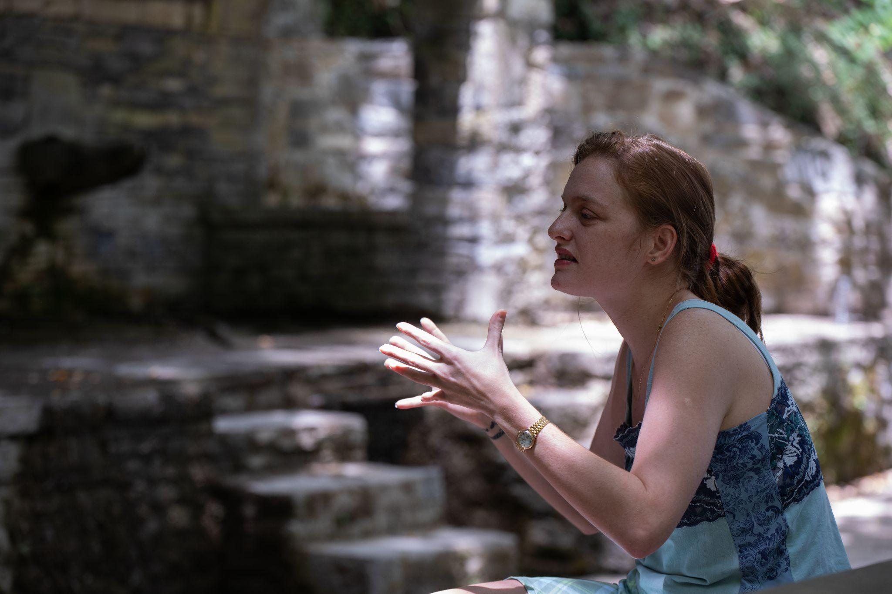
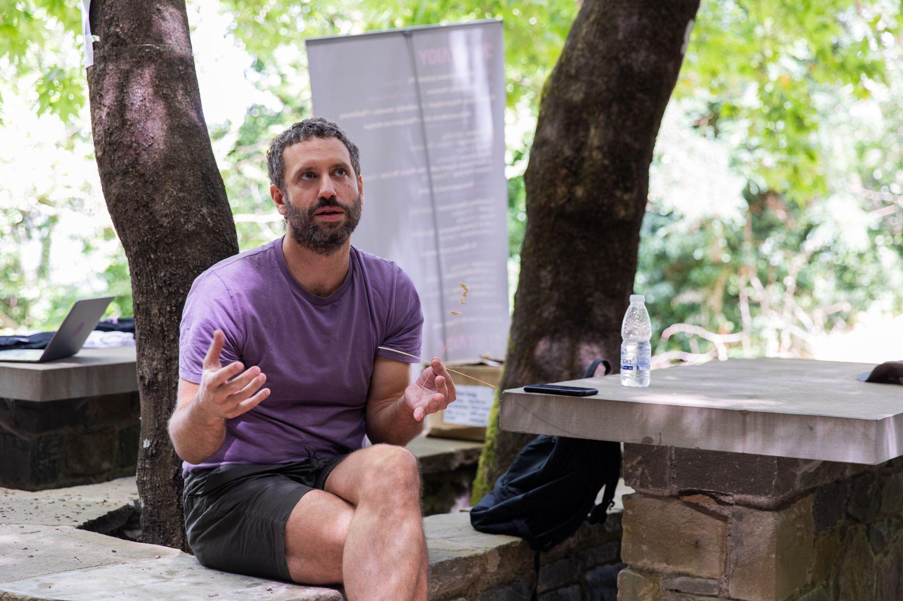

Submit your film on Film Freeway!
Benefits for Selected Filmmakers:
Transportation: Complimentary transportation from Nafpaktos to Potidania.
Hospitality: Free accommodation and meals for two people per movie over the two-day festival period. In general, the filmmakers coming to our village will have a personal and special treatment as it is one of our main goals to introduce Potidania to others.
Promotional Opportunities: Press opportunities, including a press conference on the festival's second day, social media promotion, a special listing of pt-shorts films on a dedicated Letterboxd list and promotional events before and after the festival in Athens. A great example is the projection of the award winning films of pt-shorts 2025 in the Cinobo Patision movie theater.
Masterclasses: Access to three masterclasses conducted by the festival's pristine jury.
The Jury of 2025 included Phaedra Vokali, Efthimis Kosemund-Sanidis and Flomaria Papadaki. Our Jury of 2026 will be announced until the end of April.
Festival Overview
pt-shorts: Potidania Film Festival is an emerging short film festival set in the picturesque mountainous village of Potidania, Greece. With great success, the 1st pt-shorts: Potidania Film Festival concluded on July 26–27, 2025, in the mountainous village of Potidania, in the Dorida region. The festival attracted more than 500 attendees to Saturday’s screenings, while approximately 200 visitors stayed at least for one night for the first time in Potidania, Palaioxari, and Teichio—highlighting cultural tourism and the short film industry with pt-shorts as a key pillar.
A total of 40 volunteers—half of whom have no ties to the village—played a decisive
role in delivering the event, which drew strong participation from filmmakers. A highlight
was the presence of two international directors from France and Portugal, who visited
Greece for the first time and presented their films to the Potidania audience. The program
included screenings of 16 short films (11 international and 5 national), jury-led
masterclasses, a press conference, and an awards ceremony.
pt-shorts Awards 2025
The jury—Phaedra Vokali, Efthimis Kosemund-Sanidis and Flomaria Papadaki—presented the following awards:
Best Film: Greenhouse, by Giorgos Georgakopoulos
For a firmly constructed main character, thrown into a well-crafted dramaturgy that rages around him, and an ending delivered with confidence — answering what needs to be answered, while leaving cinema open, like life.
Best Director: Pássaro Memória, by Leonardo Martinelli
Leaping with agility from poetic essay to documentary and then to musical within a matter of minutes, the film illuminates the dark streets of Rio de Janeiro with a light as beautiful as it is fragile — a light we hope will continue to grow stronger.
Best Screenplay: Agente Imobiliário Sem Casa Para Viver, by Filipe Amorim
In the echo of the Maysles brothers, this film blurs the boundaries of its own construction and patiently, meticulously unravels the contemporary thread of a social concern that ultimately strikes at the heart.
Best Acting (shared by):
-
Érika Beatriz Santos (Descamar)
A performance that captivates with its strength and simplicity, from a young actress who, with courage and confidence, invites us into her character’s inner world — reminding us that cinema is first and foremost something we experience with the body.
-
Coralie Russier (La Confrontation)
For a performance crafted with geometric precision, unafraid of emotion, that gives shape and form to the entire film from the background of a supporting role.
Audience Award: Wings, by Fivos Imellos
Festival Jury 2025
Phaedra Vokali
Director, Screenwriter, Producer
Phaedra has produced more than 20 award-winning short films, is an EAVE Producers Network & Torino Film Lab alumnus, and co-founder of Late Bloomers production company. She was the first woman to serve as General Director of the Hellenic Film Academy (2021–2023). In 2022, she made her directorial debut with the short film ENOMENA at the Norwegian Short Film Festival. In 2025, she co-created the documentary US: A Movie About Bloody Hawk and is currently developing her first feature Unholy, supported by the GFC.
Flomaria Papadaki
Actor
Flomaria graduated with honors from the National Theatre of Greece Drama School in 2020 and has since collaborated in film with Sofia Exarchou, Yorgos Zois, Alexandros Voulgaris, Kleoniki Stanich, Phaedra Vokali, Isabella Margara, Eleni Poulopoulou, and Angel Saft, and in theater with Ektoras Lygizos, Yannis Skourletis, and Yannis Houvardas. She is a 2023 Talents Sarajevo alumna, and in June 2024, she was honored by the Hellenic Film Academy with the Best Supporting Actress Award for her performance in Animal by Sofia Exarchou.
Efthimis Kosemund - Sanidis
Director, Screenwriter
Born with dual Greek/German nationality, Efthimis studied Informatics Engineering in Athens and Contemporary Arts at Le Fresnoy - Studio National in France. His shorts have been screened and have won acclaim at major film festivals such as Venice, Locarno and Clermont-Ferrand, art venues like Forum des Images, Centre Pompidou and Haus der Kulturen der Welt, and have been distributed on platforms like Festival Scope and Mubi. He is currently finishing his debut feature film.
Masterclasses 2025
Three jury-led masterclasses anchored pt-shorts’ educational core, each running ~90 minutes with an open-dialogue format.


Phaedra Vokali — “Small Stories, Big Experiences: How to Make a Short Film in Greece”
How can I make my first film with no budget? How do I prepare a funding application? How can I find a producer? This seminar addressed these and other questions, drawing inspiration and material from past experiences — successes, mistakes, and unexpected mishaps that were transformed into knowledge.
Flomaria Papadaki — “Acting and Cinema: Present and Discontinuities, Research, Imagination, Fragility”
The possible pathways and the personal tools of actors from the first encounter with the script to the actual shooting, in order to be present in front of the camera with credibility, honesty, and freedom.
Efthimis Kosemund-Sanidis — “Seeing and Hearing, Beyond a Cinema of High-Fidelity”
Cinema, as a technical —and potentially artistic— medium, often carries with it goals of technical perfection that often tend to automatically dominate the process, a high-fidelity approach that smooths out rough edges and dulls personal language, in other words, the very condition for articulating a cinematic voice with intention. How can the filmmaker render the technical aspect of their craft transparent, embrace imperfection and simply manage to see and to hear?
Potidania
Potidania, a small mountain village amphitheatrically built on the slopes of Mount
Trikorfo, gazes upon the high mountain ranges of Giona and Vardousia and, lower down, the
artificial lake and river of Mornos. It’s worth leaving behind the beautiful and
picturesque Doric seaside for a while and, with just a 20-minute drive, finding yourself
in the majestic nature where greenery dominates everywhere in and around the village,
embraced by the vast fir forest. Stone fountains with cool, running water to quench your
thirst, wooden benches at stone vantage points to explore, countless hillsides and ravines
to bring peace to your mind. Scattered white chapels on the mountain revive traditional
festivals throughout the year, while local taverns offer traditional flavors. Marked
trails guide you through the lush forest to the peak of Mount Trikorfo (1,549 meters),
where you can admire the entire Corinthian Gulf, stretching from Patras to Corinth.
Potidania aims to give you a small taste of its charms and invites you to visit and
experience them up close.
You can find more information about Potidania on the
village's website.
Festival Team

Damianos Chrysochoidis
Co-Founder | Festival Director
Damianos began his studies at the Athens University of Economics and Business before pursuing his true passion for filmmaking at SAE Athens in 2020. During his studies, he produced the multi award-winning short On the Hill and directed the documentary KOUMI. His thesis film KAPPA is currently on the festival circuit, including selections at Chania Film Festival and Microμ Film Festival. Alongside his creative projects, Damianos freelances as a videographer for businesses, NGOs, and institutions. He is also a member of the founding team of the greek NGO Ecogenia which promotes sustainability through civic engagement, training and employment opportunities for young people. He co-founded pt-shorts: Potidania Film Festival with Panagiotis after combining their common interests in movies and the betterment of their village.
Danai Theologou
Community & Sponsorship Coordinator
Danai Theologou is a chemist and cinephile with an active presence in the world of festivals and cultural organizing. She has previous experience coordinating volunteer initiatives as a member of a student group at the Aristotle University of Thessaloniki. At pt-shorts, she holds the role of Community & Sponsorship Coordinator, building relationships with the festival's supporters and audience, coordinating collaborations, and ensuring a strong connection between the event and its community. Her goal is to help maintain the festival's open, accessible, and vibrant character. Her deep love for Potidania is the driving force behind her involvement in the organization.
Stella Theologou
Chief of Marketing
Stella studied Business Administration and Communication and began her career at OTE Group, participating in the production of nationwide 360° campaigns and television projects — an experience that revealed her passion for creative storytelling and production. She has since been actively involved in the organization of volunteer initiatives and cultural events, driven by her love for art, people, and collective creation. Deeply inspired by nature, cinema, and photography, Stella finds meaning in bringing stories to life — both in front of and behind the lens. At pt·shorts: Potidania Film Festival, she leads the communication strategy, highlighting the festival’s authentic bond between film, community, and the breathtaking beauty of the mountains that surround it.
Olga Tsatou
Head of Programming
Olga graduated in 2023 from the Film Department of SAE Creative Media College. Her love for cinema and the festival experience led her to volunteer in the process of film selection and the execution of notable film festivals, such as the Athens International Film Festival (Nyxtes Premieras) and the Athens Marathon Film Festival. The student documentary The Legend of Kavalawood, which she edited and produced, competed in the National Student Section of the Drama Short Film Festival and received positive reviews from Athinorama, Luben, and LIFO. She currently works as a production manager on short and feature films.

George Stagakis
Head of Programming
George completed his bachelor’s at SAE Athens (2020–2023). He has directed the short films On the Hill and Clementine, and edited the documentary Koumi. With 3 years of experience as a video editor for a prominent radio producer, he has also worked as a videographer and editor for two companies and a well-known Greek YouTuber. Additionally, he has directed and edited three music videos and co-directed a commercial for an NGO.

Konstantinos R. Avlamis
Head of Programming
Konstantinos is a seasoned video production professional and creative storyteller with a passion for visual arts and cinema. With a background in video editing, and visual effects, Konstantinos has collaborated with diverse teams to bring compelling narratives to life. Holding a BA in Digital Film Production from SAE Institute Athens, he combines technical expertise with a deep appreciation for the art of filmmaking. With a robust portfolio, Konstantinos has worked on a variety of projects, in the post production process, including feature films, TV series, documentaries, social media campaigns, short films, and promotional content. His collaborations with production teams and creative agencies have enabled him to craft compelling narratives and impactful visuals that resonate with audiences.
Sotiria Sdoukou
Graphic Designer
Sotiria is a graphic designer, graduate of the Graphic Design & Visual Communication Department of the University of West Attica with experience in the field of advertising since 2022. Her special love for cinema and the fact that she grew up in a small village in Epirus, made her stick to the pt-shorts idea from the beginning.
Panagiotis Baklesis
Co-Founder | Operations Director
Panagiotis is a software engineer, improviser, stand-up comedian, film buff and has Potidania in his heart. He has experience in volunteering in his student years (AIESEC, board of EESTEC LC Patras). After attending loads of film festivals with Damianos, he decided to embark on this adventure and handle the operational side of pt-shorts / Potidania Film Festival.
Sponsors / Partners 2025